ULTIMATE KRESZ TESZT😱😱😱😱😱😱
Gépjármüvel közlekedve szabad-e behajtani a jelzötáblával jelzett területre?
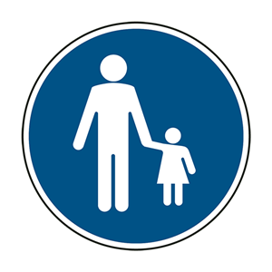
Helyes válasz: Nem
Kanyarodhat-e balra ennél a jelzésnel?
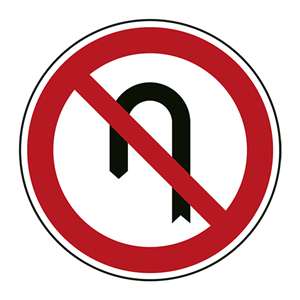
Helyes válasz: Igen
Mit jelez az úttest jobb szélén lévo táblán látható számérték?
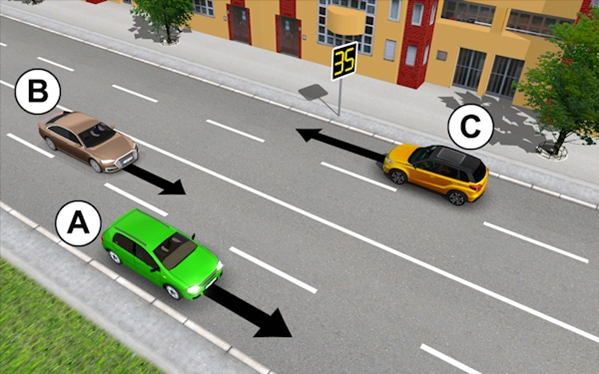
Helyes válasz: Azt a sebességet, amellyel forgalomirányitó fényjelzo készülékek elött az egyenletesm haladás erdekében közlekedni célszerü.
Ön a müszerfallal jelzett jármüvet vezeti. Szabad-e megelöznie a vasúti átjáróban a jelu kétkerekü motorkerékpárost?
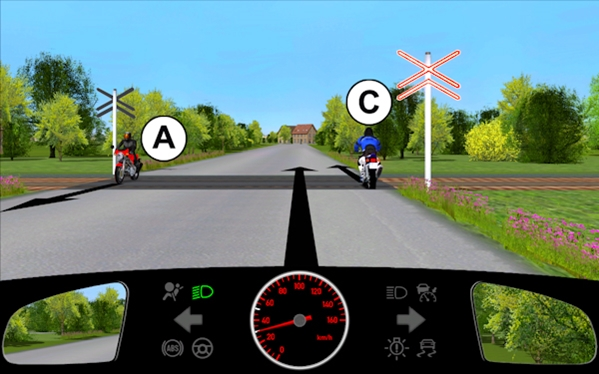
Helyes válasz: Igen
Az ábrán látható útkeresztezödésben melyik a helyes áthaladási sorrend?
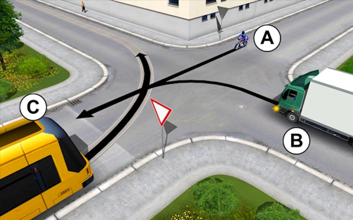
Helyes válasz: B-A-C
Ön az "A" jelu jarmüvet vezeti. Kell-e elsöbbséget adnia ebben a forgalmi helyzetben?
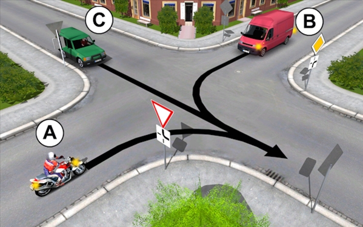
Helyes válasz: Igen de csak a B részére
Van-e az általános szabályoktól eltéro elsöbbségük a figyelmezteto jelzést használó jármüveknek a többi jarmüvel szemben?
Helyes válasz: Nincs
Kell-e izzókészletet tartanunk a jarmüben?
Helyes válasz: Nem kötelezö, de ajanlott.
A segédmotoros kerékpáron elhelyezett rakomány...
Helyes válasz: a vezetöt nem akadályozhatja a jármu vezetésében.
Az ábrán látható helyen örizetlenül hagyhatja-e jarmüvét az "A" jell motorkerékpár vezetöje?
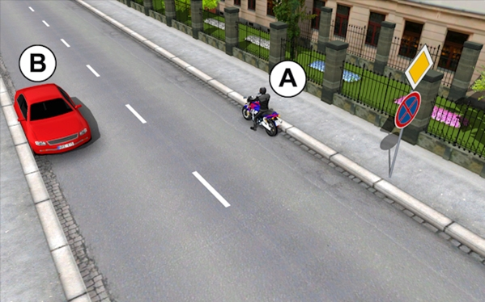
Helyes válasz: Nem
Milyen feltételek teljesülése esetén szabad elözni bukkanóban?
Helyes válasz: Ha záróvonal van felfestve, és az elözés nem jár annak érintésével.
Hányadikként haladhat át az útkeresztezödésben a müszerfallal jelzett jármüvel?
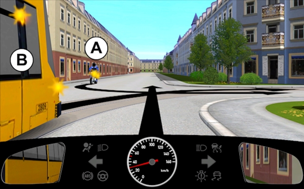
Helyes válasz: Elsöként
Ön a müszerfallal jelzett jármüvet vezeti. A háromlencsés forgalomírányitó készülék melyik fényjelzésének feleltetheto meg a film végen látható rendöri karjelzés?
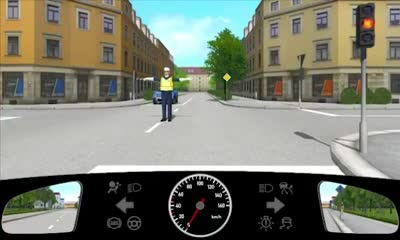
Helyes válasz: A piros-sárga jelzésnek.
Ha a bekanyarodast nem tiltja jelzotabla, milyen irányban folytathatja útjat a "B" jelu jarmü ennél a rendöri jelzésnél?
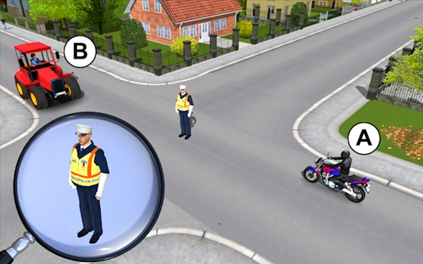
Helyes válasz: Egyenesen, valamint jobbra vagy balra bekanyarodva.
Figyelembe kell-e vennie a távolsági fenyszóró használatakor az úttal parhuzamos vizi úton haladó jarmüvet?
Helyes válasz: Igen
Négykerekü (quad) segédmotoros kerékpárjával vontathat-e elromlott ketkereku segédmotoros kerékpárt?
Helyes válasz: Nem
Mi lehet az oka annak, ha a gumiabroncs felulete egyenetlenül kopik?
Helyes válasz: Hibás a lengéscsillapító.
Mennyi lehet a meghajtólánc ábrán látható legnagyobb elmozdulása a meghajtolánc ellenörzésekor?
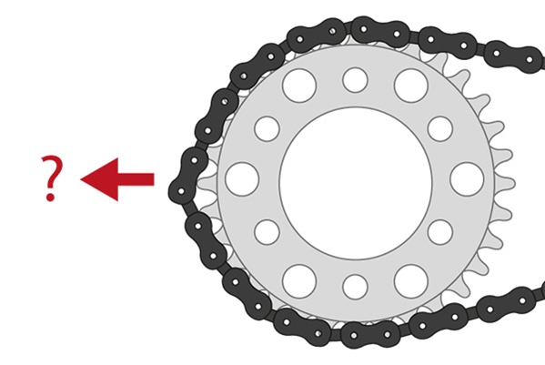
Helyes válasz: 4 mm
Milyen irányú a forgalom olyan úton, amelyen három, egymástól elkülönitett uttest van?
Helyes válasz: A középso úttesten kétirányú, a szélso úttesteken egyirányu forgalom van.
Lakott területen, egyéb jelzés hiányában legfeljebb mekkora sebességgel szabad jármüvel közlekedni a képen jelzett, táblát követo útszakaszon?
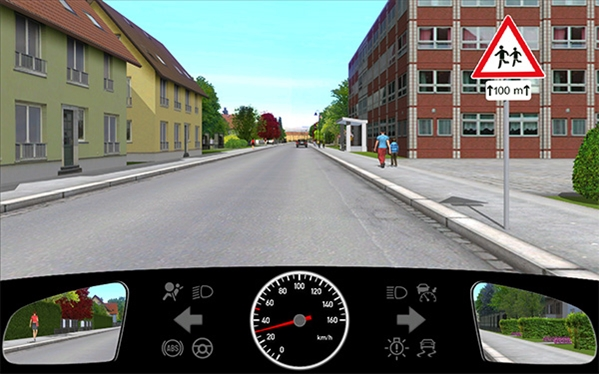
Helyes válasz: 30km/h val
A körforgalomban egy olyan villamospályát keresztez, amelyen egy villamos hajt be a körforgalomba. Mikor jar el szabályosan?
Helyes válasz: Ha elsöbbséget ad a körforgalmat keresztezo villamos részére.
Mi a jelzötábla jelentése?
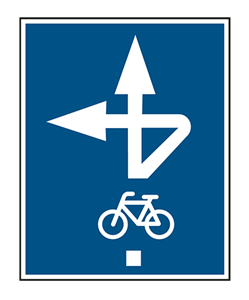
Helyes válasz: "Kerékpáros közvetett kapcsolat".
Ön a vonat elhaladása után milyen sebességgel köteles a vasúti átjárón áthajtani a müszerfallal jelzett jarmüvel?
Helyes válasz: Legalább 5 km/h átlagsebességgel.
Hideg idöben hol számíthatunk fokozottan az útfelület eljegesedésére?
Helyes válasz: Hidakon, felüljárókon, erdösávval védett útszakaszokon.
Miert szükséges a jarmu motorjának hütése?
Helyes válasz: A jármü motorjának ideális, üzemi hömérsékleten tartása miatt.
Az út vagy közmű tisztítását végző jármű...
Helyes válasz: legfeljebb 10 km/h sebességgel a járdán is közlekedhet.
Ön a műszerfallal jelzett járművet vezeti. Kell-e elsőbbséget adnia a képen látható helyzetben?
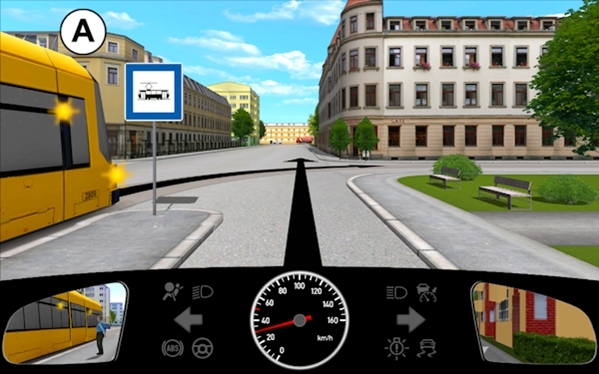
Helyes válasz: Nem
Mely járművekre vonatkozik a fényjelző készülékkel együtt elhelyezett, kötelező haladási irányt jelző tábla utasítása?
Helyes válasz: Azokra, amelyekre a fényjelző készülék jelzése irányadó.
Egyéb jelzés hiányában mekkora sebességgel szabad közlekedni lassú járműből és pótkocsiból álló jármúszerelvénnyel?
Helyes válasz: Legfeljebb 25 km/h sebességgel.
Mit jelent ez a közúti jelzés?
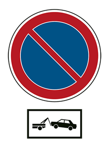
Helyes válasz: Helyes válasz: A szabálytalanul várakozó jarmüvet elszállíthatják.
Találkozhat-e lakott területen kapaszkodósáv jelzőtáblával?
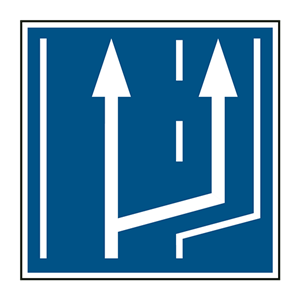
Helyes válasz: Igen
Szabad-e vasúti átjáróban és közvetlenül elötte motorkerékpárral megelözni a kétkerekű kerékpart?
Helyes válasz: Igen
Kell-e a megállást- ide nem értve a forgalmi okból történo megállást - irányjelzéssel jelezni?
Helyes válasz: Igen, kell.
Motorkerékpárral szabad-e pótkocsit vontatni?
Helyes válasz: Igen, de csak olyan pótkocsit, amelynek vontatását a motorkerékpár forgalmi engedélyében engedélyezték.
Szabályos-e, ha a közterület-felügyelő a jarmu megállítására vonatkozó jelzést ad a motorkerékpáros számára?
Helyes válasz: Igen
Mit NEM szabad megtenni az alábbiak közül a képen látható tábla hatálya alatt?
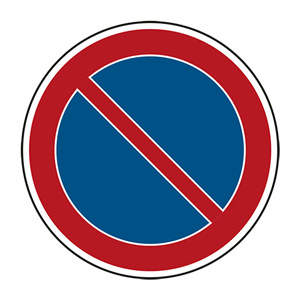
Helyes válasz: 3 percre all meg a jármüvel és erre az idöre elhagyja azt.
A jelzötáblát követõen szabad-e várakozni a járdan kétkereku motorkerékpárral?
Helyes válasz: Igen, az elöírt feltételek fennállása esetén.
Ön autópályan utolér egy ilyen táblával megjelölt autóbuszt. Megelözheti-e?
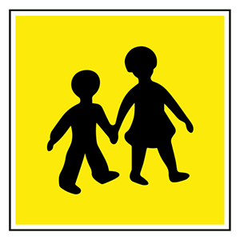
Helyes válasz: Igen
Amikor a vasúti átjáróban lévő teljes sorompót kiegészito hangjelzo berendezés hangjelzést ad, akkor...
Helyes válasz: köteles a vasúti átjáró elött megállni, akkor is, ha a sorompó rúdja még nyitott helyzetben van.
Szabad-e autóútról út menti ingatlanra behajtani?
Helyes válasz: Nem
Milyen feltételek teljesülése esetén szabad elözni be nem látható útkanyarulatban?
Helyes válasz: Ha záróvonal van felfestve,és az elözés nem jar annak érintésével.
Ön a műszerfallal jelzett jármüvet vezeti. Kell-e elsöbbséget adnia ebben a forgalmi helyzetben?
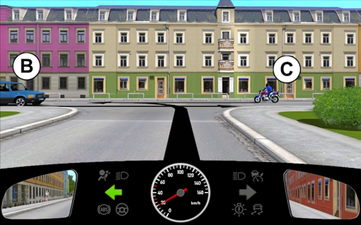
Helyes válasz: Igen, de csak a 'C" jelu jarmü részére
Az "A" jelu motorkerékpár a megallóhelyen megálló villamost...
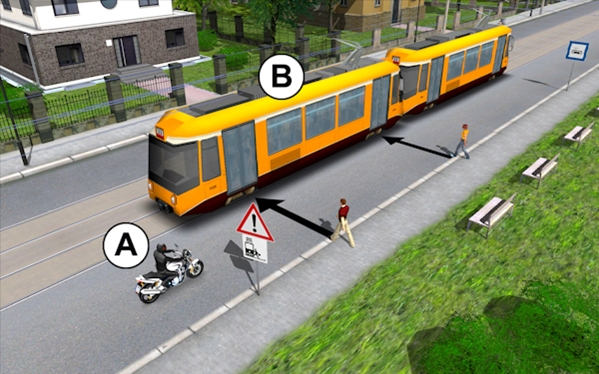
Helyes válasz: nem kerülheti ki.
Ön a műszerfallal jelzett jarmüvet vezeti. Hányadikként haladhat át az útkeresztezödésben?
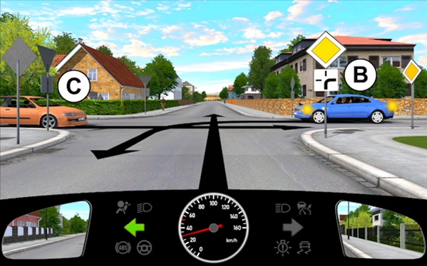
Helyes válasz: Másodikként
A látottak alapjan milyen sebességgel vezetheti jarmüvét a film vegen ábrázolt helyzetben?
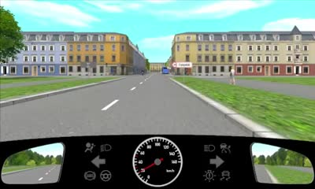
Helyes válasz: Legfeljebb 50 km/h sebességgel.
Kell-e ellenörizni az üzemi fék müködöképességét?
Helyes válasz: Igen, legalább a napi elso elindulás elött.
Mit nevezünk holttérnek?
Helyes válasz: A látótéren kívüli területet.
Ha a gyalogosok csak az úttesten tudnak közlekedni, akkor lakott területen...
Helyes válasz: lehetöleg a menetirány szerint a bal oldalon haladhatnak.
Egyéb jelzés hiányában mekkora sebességgel szabad közlekedni lassú jármúból és pótkocsiból álló jármüszerelvénnyel?
Helyes válasz: Legfeljebb 25 km/h sebességgel.
Forgalmi sávnak minősül-e az úttest villamospálya által elfoglalt része a párhuzamos közlekedésre vonatkozó szabályok alkalmazása szempontjából?
Helyes válasz: Általában nem.
Szabad-e megállni kétkerekű segédmotoros kerékpárral járdán, ha ennek lehetőségét nem jelzi jelzőtábla, vagy útburkolati jel?
Helyes válasz: Igen, ha a jármú a járda szélességének legfeljebb a felét foglalja el és a járdán a gyalogosok közlekedésére legalább 1,5 méter szabadon marad.
Motorkerékpárt vezetve köteles-e megállni a polgárör piros fényü lámpával adott jelzésére?
Helyes válasz: Igen
Hány fajta jelzést képes adni a gyalogosforgalom irányitására szolgáló fényjelzö készülék?
Helyes válasz: Három
Szabad-e utast szállitani négykerekü segédmotoros kerékpárral?
Helyes válasz: Igen, ha a jármű vezetöje betöltötte a 17. életévét.
Egyéb jelzés hiányában mekkora sebességgel szabad közlekedni motorkerékpárral autóúton?
Helyes válasz: Legfeljebb 110 km/h sebességgel.
Mi a jelző tábla neve?
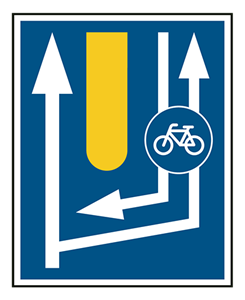
Helyes válasz: Út meletti kerékpárút.
Szabad-e elöznie az "A" jelü motorkerékpárosnak egyszerre több járművet az ábrán látható helyen?
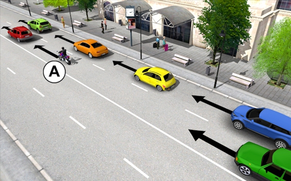
Helyes válasz: Igen
Szabad-e akadályoznia a késöbb odaérkezö villamos forgalmát, ha a villamospályára vezetett forgalmi sávban közlekedve tilos jelzést kapott?
Helyes válasz: Igen
Szabad-e várakozni lakott területen kívüli út úttestjén?
Helyes válasz: Igen, ha az nem főútvonal.
Ön a műszerfallal jelzett járművet vezeti. Kell-e elsőbbséget adnia ebben a forgalmi helyzetben?
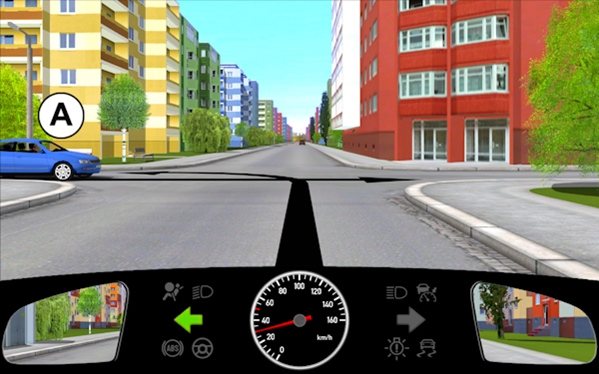
Helyes válasz: Nem
Az ábrán látható útkereszteződésben melyik a helyes áthaladási sorrend?
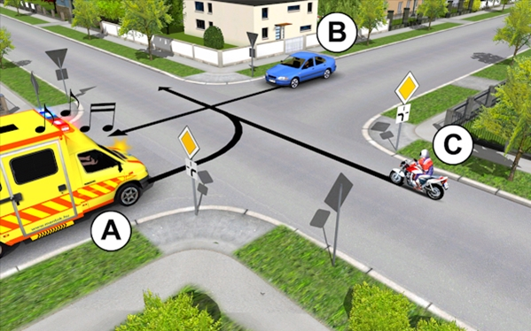
Helyes válasz: A-C-B
Hányadikként haladhat át az útkereszteződésben a "C” jelű jármű?
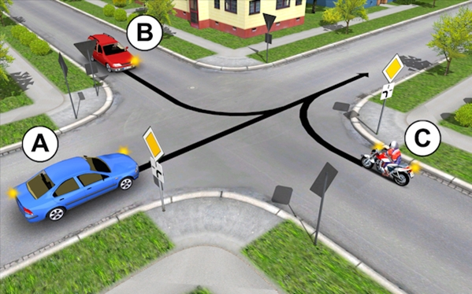
Helyes válasz: Elsõként
Ön a "C” jelü járművet vezeti. Továbbhaladhat-e az útkereszteződésben, ha a rendőrt a képen látható karjelzéssel látja?
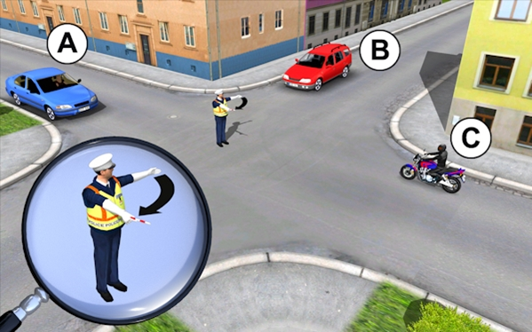
Helyes válasz: Nem
Hányadik közlekedési előéleti pont elérését követően kerül a vezetői engedély visszavonásra?
Helyes válasz: 18.
Mikor nem irányadó a "Főútvonal” jelzőtábla jelzése?
Helyes válasz: Ha a forgalmat fényjelzó készülék irányítja.
Hol helyezhetik el az ábrán látható táblát az alábbiak közül?
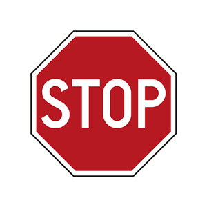
Helyes válasz: Útkereszteződésben és vasúti átjáróban egyaránt.
Szabad-e megállni kétkerekű motorkerékpárral az úttest szélén egymás mellett két sorban, vagy az úttest széléhez viszonyítva ferdén?
Helyes válasz: Igen, egyéb jelzés hiányában, de a járművek az úttestből egy személygépkocsi szélességénél többet nem foglalnak el.
A "B” jelü járművet vezetve elsőként haladhat át ebben az útkereszteződésben?
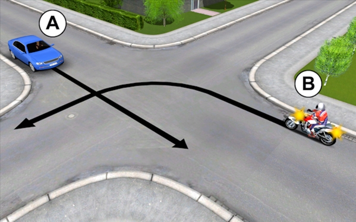
Helyes válasz: Nem